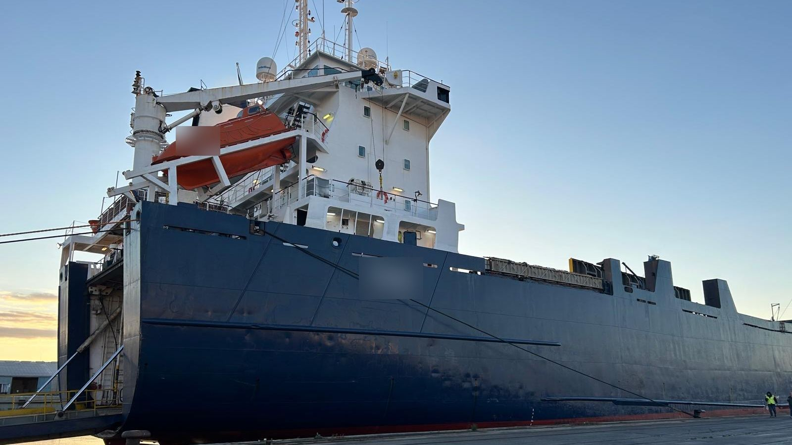

Ce que nous faisons
Nos services
Trois services pour organiser le transport de vos marchandises entre l'Europe et l'Afrique du Nord.

Service 01
Transport maritime Ro-Ro
Véhicules, engins et marchandises roulantes embarqués par rampe.
- Véhicules, engins et marchandises roulantesEmbarquement par rampe.
- Ports et hubs de référenceTanger Med, Casablanca, Sète.

Service 02
Transport routier
Fret par camion en Europe et en Afrique du Nord.
- EuropeFrance, Espagne, Italie.
- Afrique du NordMaroc, Algérie.

Service 03
Solutions logistiques
Les services qui accompagnent le transport.
- AffrètementMoyens de transport adaptés au besoin.
- Commission de transportOrganisation du transport pour le compte du client.
- DédouanementAccompagnement dans les formalités douanières.
- StockageEntreposage avant ou après transport.
Un transport à organiser ?
Parlez-nous de votre trajet et de vos marchandises.